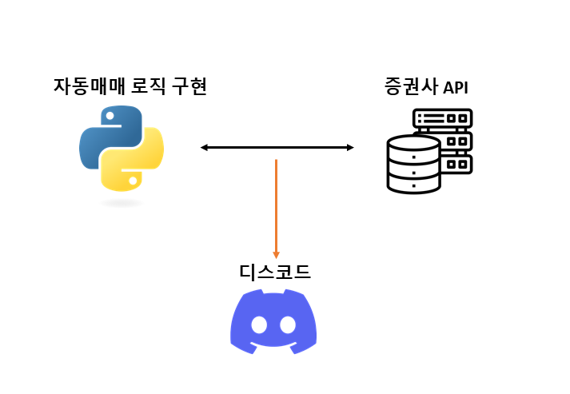

자동매매를 해보자
자동매매를 해보자#
앞장의 예측 모델로 추천 받은 종목으로 자동매매를 해보는 시간 입니다. 자동매매 프로그래밍은 증권사 API 를 활용하여 파이썬으로 구현할 수 있습니다. 한국투자증권 API 는 기존 증권사들의 것과 완전히 다른 형태로 서비스를 제공하고 있습니다. 구동방식이 기존의 COM, OCX, DLL 과 달리 Rest API(request) 및 Websocket(실시간) 방식 입니다. 따라서, HTS 접속없이 API 호출이 가능한 접근성이 높은 서비스 입니다. 이번 장에서는 한국투자증권 API 를 활용한 자동매매 방법을 먼저 알아보고 기존 COM 방식의 이베스트투자증권 API 를 활용하는 시간을 갖겠습니다. 이베스트투자증권 API 는 여러 증권사들의 API 중에서도 커뮤니티 형성이 잘 되어 있어서 참고 자료 접근성이 용이하여 채택하게 되었습니다. 두 API 를 모두 사용해 보면서 장단점을 비교해 보고 자신에게 더 맞는 API 를 선택해 보시기 바랍니다. 한편, 한국투자증권 API 자동매매 코드는 유투버 조코딩님의 영상(https://www.youtube.com/watch?v=2Hxfb5HT4kE) 및 깃헙(https://github.com/youtube-jocoding/koreainvestment-autotrade)을 많이 참고 했습니다. 이베스트증권 API 자동매매 코드는 유투버 프로그램동산님의 영상(https://www.youtube.com/playlist?list=PLDtzZPtOGenYAnPT-vVam534Med-dNMDf) 및 카페(https://cafe.naver.com/programgarden/2857)를 많이 참고 했습니다. 두 분 모두 정말 감사드립니다.
자동매매 프로그램의 경과를 모니터링 하기 위해서 Discord 라는 서비스를 함께 활용할 계획 입니다. Discord 는 서버를 통해 채널(채팅방)을 만들 수 있고, 해당 채널과 연동된 웹후크를 생성 할 수 있습니다. 생성된 웹후크를 활용해서 웹과 모바일 앱을 통해 간편하게 경과 메시지를 받아 볼 수 있습니다.
{kind=link}